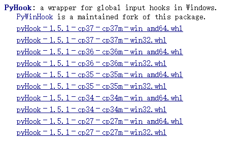

Windows上实现自动化脚本
python在windows上的生态做的比较好，各种依赖包模块也比较齐全，所以在windows上实现自动化脚本相对容易一些，相关的实现文章和文档也比较多。我一开始做自动化脚本就是在windows系统上弄的，在这过程中也踩了一些坑，特于此整理，以备后查。
运行环境：Win10/Python3.7
主要模块：win32gui，利用pip安装 pywin32即可。
模拟鼠标点击的关键代码和说明
使用的主要函数：win32api.mouse_event
函数原型
VOID mouse_event(
DWORD dwFlags, // motion and click options
DWORD dx, // horizontal position or change
DWORD dy, // vertical position or change
DWORD dwData, // wheel movement
ULONG_PTR dwExtraInfo // application-defined information
);
参数说明
dwFlags：标志位集，指定点击按钮和鼠标动作的多种情况。这里主要介绍鼠标点击的一些组合：
- MOUSEEVENTF_LEFTDOWN：表明接按下鼠标左键。
- MOUSEEVENTF_LEFTUP：表明松开鼠标左键。
- MOUSEEVENTF_RIGHTDOWN：表明按下鼠标右键。
- MOUSEEVENTF_RIGHTUP：表明松开鼠标右键。
- MOUSEEVENTF_MIDDLEDOWN：表明按下鼠标中键。
- MOUSEEVENTF_MIDDLEUP：表明松开鼠标中键。
- MOUSEEVENTF_WHEEL：在Windows NT中如果鼠标有一个轮(wheel)，表明鼠标轮被移动。移动的数量由dwData给出。
dx：指定鼠标沿x轴的绝对位置。
dy：指定鼠标沿y轴的绝对位置。
dwData：如果dwFlags为MOUSEEVENTF_WHEEL，则用dwData来指定鼠标轮移动的数量。
- dwData为正值：表明鼠标轮向前转动，即远离用户的方向；
- dwData为负值：表明鼠标轮向后转动，即朝向用户。
- 一个轮击(即滚动一次)定义为WHEEL_DELTA，即120。
注意：在使用鼠标轮(wheel)时，如果想实现多次连续滚动，建议使用循环语句，且每次执行后稍微停顿(sleep)一下。
示例代码
import win32con |
以下是模拟鼠标点击的关键代码：
import time |
参考链接：
模拟键盘输入的关键代码和说明
使用的主要函数：win32api.keybd_event
函数原型
keybd_event(bVk, bScan, dwFlags, dwExtraInfo)
参数说明
bVk：定义一个虚拟键码，键码值必须在1～254之间（键盘键码对照表请见下方代码中的VK_CODE）。
bScan：定义该键的硬件扫描码，一般设置为0即可。
dwFlags：定义函数操作的一个标志位。置为0表示该健被按下，置为KEYEVENTF_KEYUP表示该健被释放。
dwExtraInfo：定义与击键相关的附加的32位值，一般设置为0即可。
示例代码
import win32api |
以下是模拟按键输入的关键代码：
import time |
参考链接：
网上也有一些关于如何模拟鼠标点击和键盘输入的文章，可以参考下面的链接：
实现跨平台自动化脚本（Windows/Linux）
由于pywin32无法在linux系统上安装加载，所以如果想在linux系统上实现自动化脚本，需要寻找其它的替代方案。
通过网上查阅资料发现，有一个模块也可以实现模拟操作鼠标和键盘，它就是PyUserInput，最新版本0.1.11。
其实我们要实现模拟操作鼠标和键盘，需要用到pymouse和pykeyboard这两个模块，而PyUserInput模块将它们俩打包在一起了，所以我们只需要安装PyUserInput模块就可以了（这里可能要翻车了，因为我在windows上尝试过，如果只装PyUserInput，不装pymouse的话，是无法成功 import pymouse 的）。
以下涉及到的所有命令的运行环境：
- Windows环境：Win10/Python3.7
- Linux环境：Ubuntu18.04/Python3.7
PyUserInput简介
PyUserInput是一个跨平台、使用python操作鼠标和键盘的模块，非常方便使用。支持的平台及依赖如下：
- Linux - Xlib (python-xlib)
- Mac - Quartz, AppKit
- Windows - pywin32, pyHook, pymouse
简剖PyUserInput
通过阅读PyUserInput源码（其实是pymouse和pykeboard源码，源码均在Python37\Lib\site-packages目录下）和官网信息，可以得知，
- 在windows平台上，PyUserInput基于pywin32模块，封装了win32api中的mouse_event和keybd_event等核心函数，从而实现了模拟鼠标输入和键盘输入的功能，也就是pymouse和pykeyboard模块。
- 在linux平台上，PyUserInput基于Xlib库，封装出pymouse和pykeyboard模块，可运行支持X11的linux平台上。
相关说明：
- X11 中的 X 指的是 X 协议，11 指的是采用 X 协议的第 11 个版本。
- Linux 的图形化界面，底层都是基于 X 协议。
PyUserInput安装
下面分别介绍在windows环境下和linux环境下如何安装PyUserInput模块。
windows环境下安装PyUserInput
在windows环境下，我们需要先安装3个依赖包，依次为pywin32、pyHook和pymouse。
由于我的Win10电脑上同时安装了python2和python3，所以在输入pip命令时需要区别开来。
安装pywin32
pip3 install pywin32 |
安装pyHook
pyHook通过pip命令无法安装，所以需要下载whl格式的安装包（whl格式本质上是一个压缩包，里面包含了py文件，以及经过编译的pyd文件），可以通过这里下载到pyHook安装包：https://www.lfd.uci.edu/~gohlke/pythonlibs/#pyhook

选择适合自己环境的安装包。这里由于我的电脑是Win10 64位系统，使用的是Python3.7，所以我选择的是
pyHook‑1.5.1‑cp37‑cp37m‑win_amd64.whl
然后使用pip命令安装pyHook：
pip3 install D:\pyHook‑1.5.1‑cp37‑cp37m‑win_amd64.whl #假设whl文件在D盘根目录下 |
安装pymouse
pip3 install pymouse |
这时，3个依赖包都已经安装完毕，下面开始安装PyUserInput：
pip3 install PyUserInput==0.1.11 |
安装完成后，可通过命令pip3 list查看python3下面已经安装的所有模块。
参考链接：
linux环境下安装PyUserInput
##################################待补充
使用pymouse模拟鼠标点击
pymouse模块的基本用法：
# import the module |
是不是感觉用起来很简单？其实就是这么简单哈。不过这里有个地方可能需要稍微注意一下，就是click这个函数。
通过看pymouse的源码我们可以知道，click的函数原型其实是这样的：
def click(self, x, y, button=1, n=1): |
最后一个参数是代表点击鼠标多少次，但我个人测试了一下这个参数，发现并不灵敏，达不到预期效果。所以建议大家在需要模拟鼠标双击的时候，最好自己写一个函数，调2次click，中间稍微sleep一下，这样效果会更好。
我当时在使用pymouse的时候，遇到过一个小坑或一个可能可以优化的点，在这里也跟大家分享一下：
我们先找到pymouse源码中的click函数、press函数和release函数，源码内容如下（以Windows的pymouse源码为例，Linux的也可做类似修改）：
click函数源码（base.py文件）
def click(self, x, y, button=1, n=1): |
press函数源码（windows.py文件）
def press(self, x, y, button=1): |
release函数源码（windows.py文件）
def release(self, x, y, button=1): |
这3个函数源码比较简单，我们可以看到，press函数和release函数中都有move函数，这个是用来移动鼠标指针到指定坐标的函数，在press函数和release函数中放一个move函数，不免让人觉得奇怪。按正常的逻辑，应该把move放在click函数中，press和release就干好press和release的活就好了，也符合高内聚低耦合的设计理念。所以我对它们进行了简单改造，改造后代码如下（click函数中增加了move函数调用，顺带sleep一下，给个缓冲时间；press和release中删除了move函数调用）：
click函数（修改后）
from time import sleep |
press函数（修改后）
def press(self, x, y, button=1): |
release函数（修改后）
def release(self, x, y, button=1): |
这样修改之后，会显得逻辑上更顺一点，可能也是自我感觉顺一点吧，也许pymouse作者觉得他那种方式更好，这个就仁者见仁智者见智了，凡事没有绝对的对错好坏之分，只要合适就好，哈哈。
使用pykeyboard模拟键盘输入
pykeyboard模块的基本用法：
from pykeyboard import PyKeyboard |
pykeyboard也支持输入各种功能键和数字键：
k.tap_key(k.function_keys[5]) # Tap F5 |
pykeyboard还支持各种组合键的输入：
# Create an Alt+Tab combo |
参考链接：
脚本后台定时自启
一般我们写完自动化脚本以后，可能需要让它能够定时在后台自启，下面我们一起来看看这块如何实现。
Windows系统上定时启动
在windows上定时启动python脚本，有个比较简便的方式：使用windows系统自带的 “任务计划程序” ，具体操作可参考这篇文章《windows创建定时任务执行python脚本》。
Linux系统上定时启动
可使用linux系统的 crontab命令 来实现：
################################待补充
参考链接：